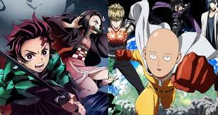
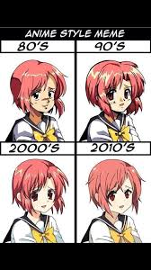

Istorijat Anime-a
Anime (jap. アニメ) je stil crtane animacije poreklom iz Japana, sa karakterističnom stilizacijom likova i pozadine, koja ga vizuelno odvaja od drugih vidova animacije. Reč anime dolazi od japanske reči animeshōn (アニメーション) zasnovane na engleskoj reči animation i u Japanu se koristi za sve animacije. Dok su neki anime u potpunosti ručno crtani, pomoć računara u procesu stvaranja animea je potpuno uobičajena. Priče animea su obično izmišljene. Anime se emituje preko televizije, distribuira na medijima kao što su VHS ili DVD i preko igara za konzole ili računare. Mnoga anime dela su nastala pod uticajem japanskog stripa poznatog kao manga. Neki anime naslovi su adaptirani u igrane filmove ili serije.Izvan Japana, anime se specifično odnosi na animacije iz Japana ili kao japanski diseminirani stil animacije koji često karakteriše šarena grafika, živahni likovi i fantastične teme. Kulturno apstraktni pristup značenju reči otvora mogućnost da anime budu proizvedene u drugim zemljama osim Japana. Jednostavnosti radi, mnogi zapadnjaci striktno gledaju na anime kao japanski animacioni proizvod. Neki naučnici napominju da definisanje anime kao specifično ili suštinski japanskog stila može biti povezano sa novim oblikom orijentalizma.
Istorija anime-a počinje početkom 20. veka, kada su japanski tvorci filmova eksperimentisali sa tehnikama animacije koje su prethodno bile razvijene na zapadu. Prve animacije u Japanu su počele da se prave 1917. godine. Tokom sedamdesetih, anime se dalje razvijao, odvajajući se od svojih zapadnjačkih uzora i razvijajući jedinstvene žanrove kao što je „meka“. Osamdesetih godina, anime je prihvaćen kao mejnstrim i doživeo je pravi bum u proizvodnji. Od devedesetih naovamo, anime je prihvaćen i u drugim zemljama.
|  |
|---|
Definicija i upotreba
Anime je umetnička forma, posebno animacija, koja uključuje sve žanrove prisutne u kinematografiji, ali se može pogrešno klasifikovati kao žanr. U japanskom, termin anime se odnosi na sve forme animacije iz celog sveta. U englenskom jeziku, anime (/ˈænəˌmeɪ/) se restriktivnije koristi za označavanje „animiranog filma ili televizijske zabave u japanskom stilu” ili kao „stil animacije stvoren u Japanu”.Etimologija reči anime je sporna. Termin „animacija” se piše u japanskoj katakani kao アニメーション (animēshon, Japanski izgovor: [animeːɕoɴ])[3] i jednako je アニメ (anime) u svojoj skraćenoj formi. Neki izvori to tvrde da je anime izvedeno iz francuskog termina za animaciju dessin animé, dok drugi smatraju da je to mit izveden iz franske popularnosti ovog medijuma u kasnim 1970-tim i 1980-tim.[3] U engleskom, anime — kad se koristi kao zajednička imenica — normalno funkcioniše kao gradivna imenica. (na primer: „Da li gledaš anime?” ili „Koliko anime si sakupio?”) Pre ulaska termina anime u široku upotrebu, termin japanimacija je bio prevalentan tokom 1970-ih i 1980-ih. Sredinom 1980-ih, termin anime je počeo da zamenjuje japanimaciju. Uopšteno govoreći, stariji termin se sad pojavljuje samo u razdobljima gde se koristi za razlikovanje i prepoznavanje japanske animacije.pulsara, i time potvrdili pretpostavku o postojanju neutronskih zvezda. To je kasnije interpretirano da vodi poreklo od izolovane, rotacione, neutronske zvezde. Izvor energije je energija rotacije neutronske zvezde. Najveći broj poznatih neutronskih zvezda su ovog tipa.
Žanrovi i muzika
Anime ima mnogo žanrova, kao i tradicionalni igrani filmovi i serije. Ti žanrovi podrazumevaju avanture, naučnu fantastiku, priče za decu, ljubavne priče, srednjovekovnu fantaziju, erotiku, horor, akciju i dramu. Većina animea sadrži elemente nekoliko različitih žanrova, kao i varijacije tema. Ovo čini vrlo teškim razvrstavanje nekoliko naslova. Anime može da ima naizgled prostu radnju, ali u isto vreme može sadržati mnogo složeniju, dublju radnju i razvijanje likova. Nije neobično da animei orijentisani prevashodno dobroj akciji sadrže humor, ljubav, pa čak i oštre društvene komentare. Isto se može odnositi na anime orijentisane ka ljubavnim pričama koji mogu da sadrže jake akcione elemente.Kao i zapadni igrani filmovi, i anime koristi muziku kao važnu umetničku alatku. Pesme iz animea su veliki biznis u Japanu i često imaju svoje top-liste. Ovo je razlog zašto muziku iz animea često komponuju i izvode najbolji muzičari.
Najčešća upotreba muzike u animeu je za potrebe pozadinske muzike. Pozadinska muzika se koristi da naglasi datu scenu, na primer "Decisive Battle" iz serije Neon Genesis Evangelion se čuje kada likovi vrše pripreme za bitke i odlikuje se jakim udarcima u bubanj i vojnim stilom koji naglašava napetost scene i nagovešta predstojeću borbu.
Naslovna muzika se obično poklapa sa opštim prizvukom serije ili filma i služi da uzbudi gledaoca. Odjavne pesme često komentarišu radnju ili celu seriju ili film i često se koriste da naglase posebno važne scene. Uvodne i odjavne teme, kao i ubačene pesme, često izvode popularni muzičari, tako da na ovaj način pesme postaju vrlo važan deo animea.
Proces animacije
- Tehnike
- Stilovi animacije
Tehnike
Stil crtanja koji je korišćen u animeu koji je stvoren za televiziju je kontraproduktivan procesu animacije. Anime stil ima naglasak na detaljima koji kasnije stvarju teškoće da se ispoštuje produkcijski raspored i budžet, što je kontrast stilovima animacije koji imaju dizajnersku etiku koja naglašava jednostavnost.Osamu Tezuka je usvojio i uprostio mnoga Diznijeva animacijska pravila da bi smanjio cenu i broj frejmova u produkciji, iako treba napomenuti da Diznijevi filmovi stvoreni na zapadu nisu anime. Ovo je bilo zamišljeno kao privremena mera koja će mu omogućiti da uradi jednu epizodu svake nedelje sa neiskusnim animatorskim osobljem. Neki animatori u Japanu su prevazišli produkcione budžete korišćenjem drugačijih tehnika od Diznija i Tezukinih metoda animacije animea. Zahvaljujući smanjenom broju frejmova, nekoliko mirnih kadrova i skrolujućoj pozadini, scene su stvarane sa većim fokusom na kvalitetu od ostatka produkcije. Animator Jasuo Ocuka je bio pionir ove tehnike. Režiseri poput Hirojukija Imaišija (Cutey Honey, Dead Leaves) su uprostili pozadine tako da se više pažnje moglo posvetiti animaciji lika. Drugi animatori poput Tacujukija Tanake (posebno u Eternal Family Kodžija Minamota) je koristio "stisni i izduži", animacijsku tehniku koja nije često korišćena od strane japanskih animatora; Tanaka je napravio druge olakšice da bi kompezovao ovo. Anime studiji koriste tehnike da bi crtali što manje nove animacije kao što je korišćenje dijaloga koji uključuju samo animiranje usta dok ostatak scene ostaje apsolutno nepromenjen, tehnika koja je poznata zapadnjačkim animacijskim stilovima.
 |
|---|
Stilovi animacije
Anime stil se karakteriše senčenjem, crtanjem kose u odvojenim pramenovima, karakterističnim načinom crtanja očiju (vidi slike), i „manama lica“ u animaciji. Mane lica uključuju, na primer, izražavanje besa tako što kod lika iskoče vene na čelu, izražavanjem stida pojavljivanjem crvenila na licu...|  |
|---|